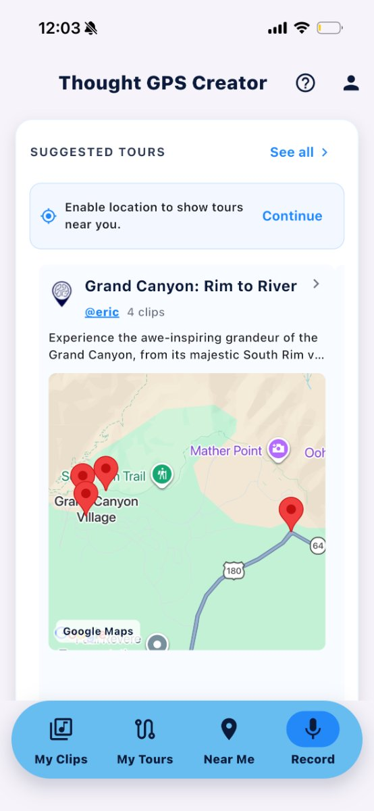
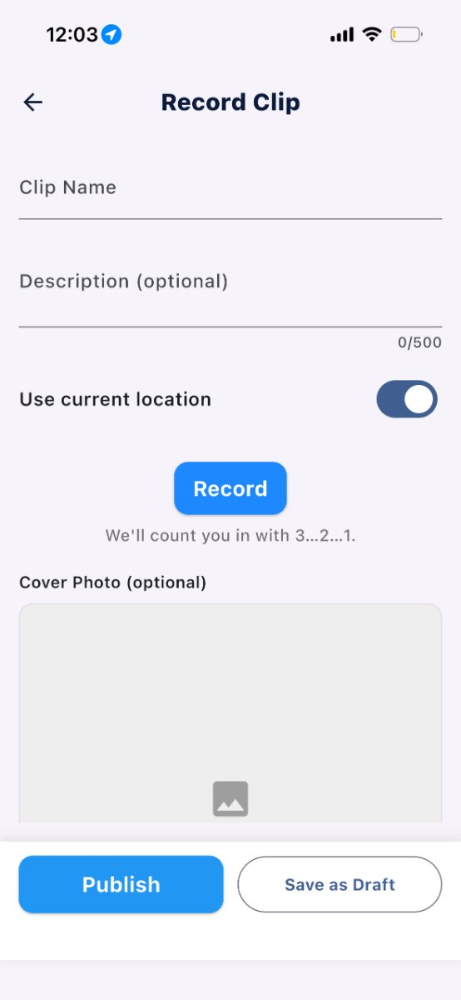
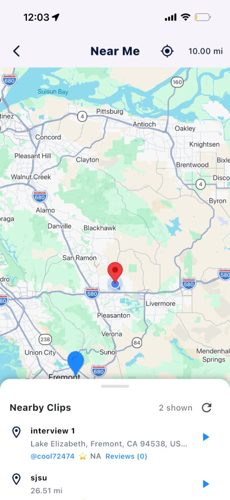
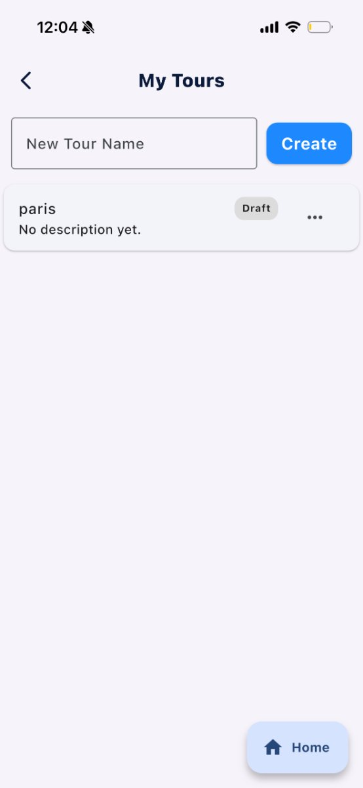
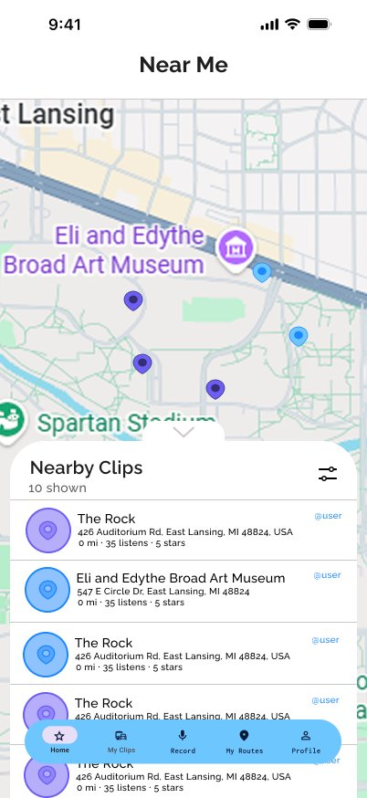
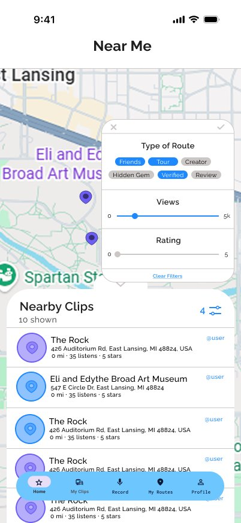
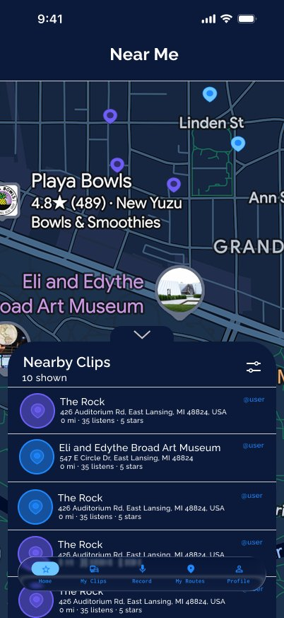
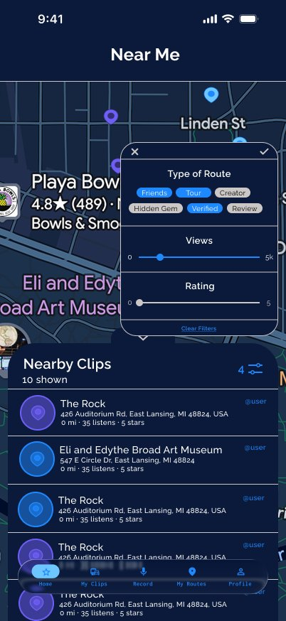

ThoughtGPS
Improving the ThoughtGPS Creator experience through user research, onboarding insights, and a collaborative redesign of the app's UI and UX.
- Role
- User Onboarding & Product Research Intern
- Timeline
- May – Aug 2026
- Team
- Product + UI/UX teams
- Focus
- Onboarding, retention, gamification
Context
ThoughtGPS is an audio-route platform where creators record short clips and stitch them into location-based routes that listeners follow. I joined the User Onboarding team an intern on the Creator app, working remotely alongside the UI/UX teams. My brief: figure out where new creators were getting stuck and turn the research into changes we could actually build.
The problem
Creators were signing up, then getting stuck. Going from downloading the app to creating a first clip, and from a first clip to building a full route, required a lot of unfamiliar work upfront. Through testing and feedback, we found that new creators often weren't sure what to do next or whether they were making progress.




The live Creator app I tested and gave feedback on. Recording worked, but it wasn’t always clear what to do next. The Tours list was empty, and the map looked the same whether you had one clip or fifty.
Research
My team and I ran user interviews and usability tests with creators, paying attention to where they hesitated, what confused them, and what they expected to happen next. I helped identify and organize these friction points, then worked with the team to turn our findings into a prioritized set of product improvements.
I also tested the ThoughtGPS Creator app myself, submitted detailed product feedback, and completed several creator focused assignments. I created an AI character and creator profile and built five location based audio tours, which gave me a better understanding of the product from the creator's perspective.
Prioritizing what to build
Rather than creating a wishlist of features, we compared ideas based on their potential impact and how difficult they would be to implement.
Highest impact
First Clip Badge · First Route Badge · Creator Levels · Points System
EASIEST TO BUILD
First Clip Badge · First Route Badge · Route Completion Trophies · City Explorer Badges
Deliberately deferred
Leaderboards. Competitive ranking could discourage the new creators we were trying to get started, so we chose to focus on progress and achievement instead.
The solution
Redesigning Near Me
Before
After

A pin language
The main goal was to make the map easier to understand at a glance. We gave each type of pin its own color and center so creators could tell their drafts from published work, while listeners could tell the difference between a friend’s clip, a featured clip, and a premium clip without opening each one.
Draft
Published
Nearby
Friends
Featured
Premium
We tested a few different ways to use color, including the outer pin, inner dot, and list row. We ended up using a colored pin with a neutral center because it was easiest to read on the map in both light and dark mode.
Filters and a dark map
Once the pins had clear meanings, we could also add filters for route type, view count, and rating directly on the map.



Outcomes
The work came together as a prioritized product brief that the team could use to guide future improvements. We also defined the metrics that would help evaluate the experience, including signup to first clip conversion, signup to first route conversion, clips and routes per creator, weekly active users, 7 day retention, route completion, and referrals.
More importantly, the project gave me experience working with a live mobile product and seeing how user research, product feedback, and UI/UX decisions connect. I learned how to take something a user struggles with and turn it into a product decision the team can act on.